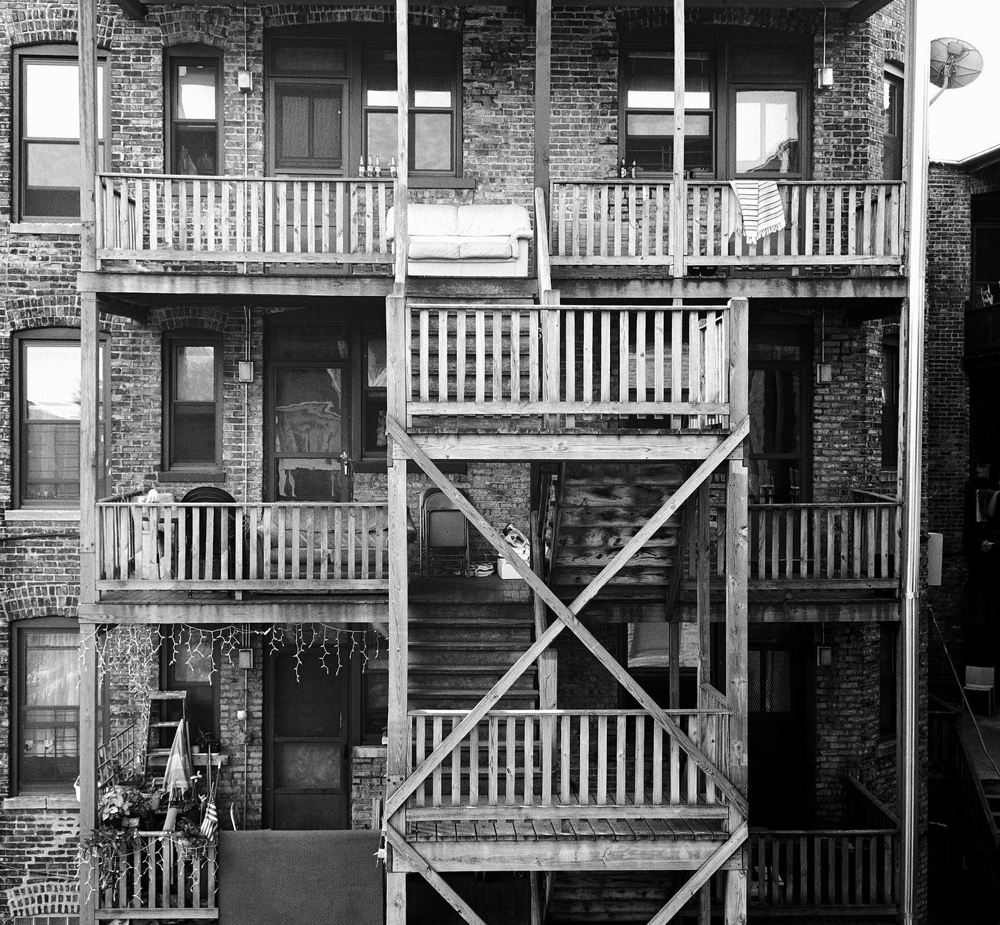

John
"My name is John, and I'm a farmer living on a small farm in rural Iowa. I've spent most of my life working the land, and there's nothing that makes me happier than being out in the fields, tending to my crops and animals."
"I come from a long line of farmers. My great-grandfather homesteaded this land over a century ago, and it's been in my family ever since. I grew up here, and from the time I was old enough to walk, I was out in the fields helping my dad and grandpa."

"Is it hard? Sure, there are days when I'm exhausted and I wonder why I do this. But then I look around at the beautiful land I get to call home, and I remember that this is who I am. I'm a farmer, and I wouldn't have it any other way. My grandad told me once that anything worthwhile will be hard, I've lived by that all my life"
Marquis
I was born and raised on the southside of Chicago. Growing up, I had to learn how to be tough to survive. The streets were tough, and if you didn't know how to fight, you were going to get beat up pretty bad. But that's not all there is to me. I'm a creative person, and I have a love for writing.
I remember the first time I read a book that really spoke to me. It was "The Autobiography of Malcolm X." I was blown away by his story and his message. It was like he was speaking directly to me, telling me that I had the power to make something of myself. I started reading more books after that, and I realized that writing could be a way for me to make a difference.
Maddie
My name is Maddie and I was born and raised in a small town in Kentucky. I come from a long line of farmers and my family has lived on the same land for generations. Growing up, I spent most of my time outdoors, either helping my parents tend to the crops or exploring the woods that surrounded our property.

One of my fondest childhood memories was spending summer evenings sitting on the front porch with my family, listening to the crickets chirp and watching the fireflies dance in the fields. We would eat homemade ice cream and tell stories, and for a few hours, everything in the world seemed perfect. As I got older, I realized that the world outside of my little town was much bigger and more complex than I ever could have imagined. I went to college in Lexington, which was a big adjustment for me. I had never been around so many people from different backgrounds and cultures before. But I quickly adapted and made some great friends.